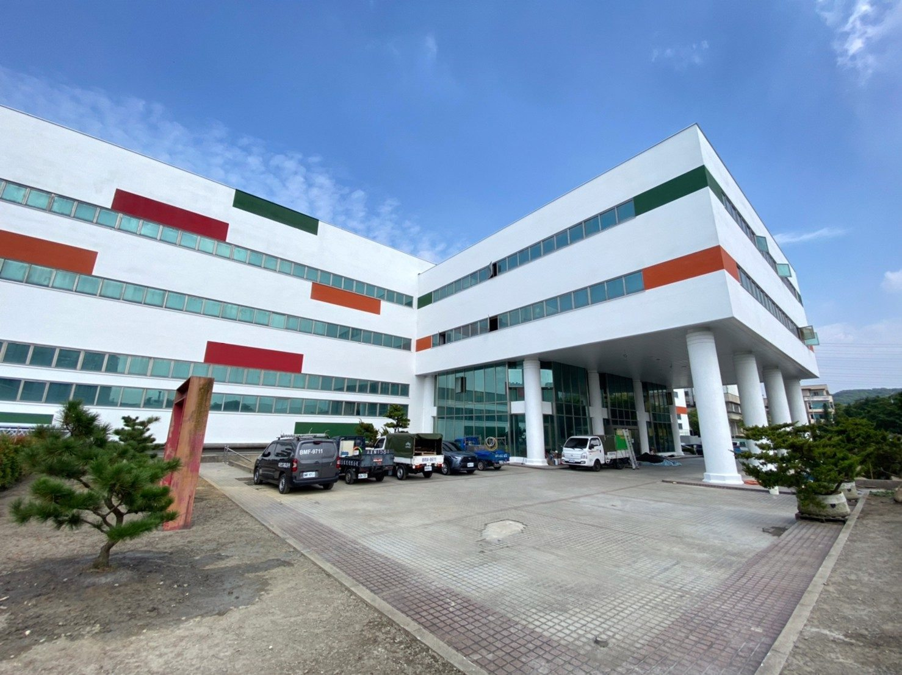
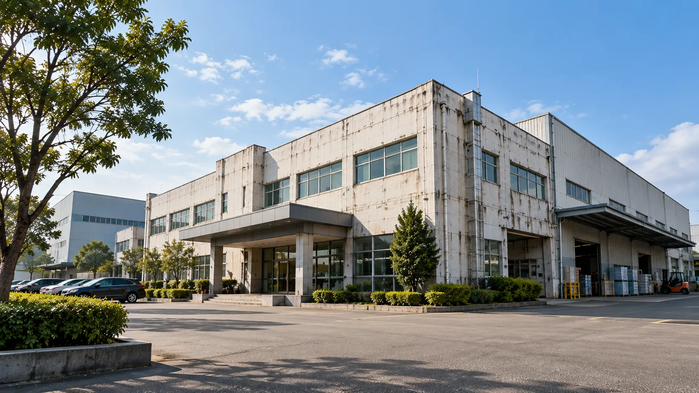
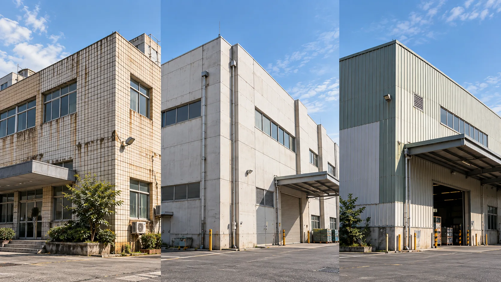
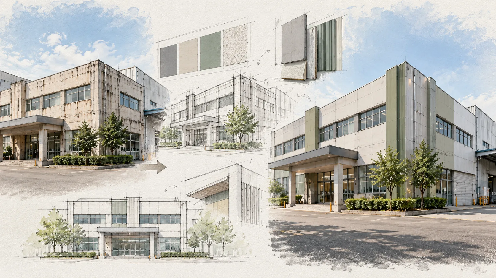
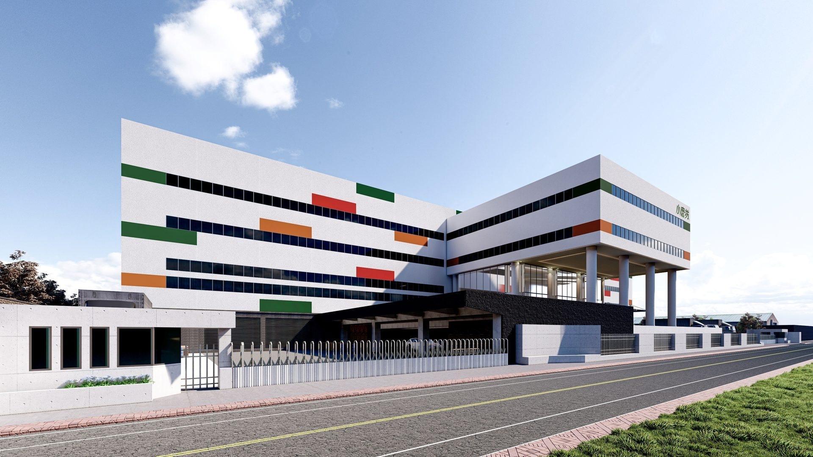
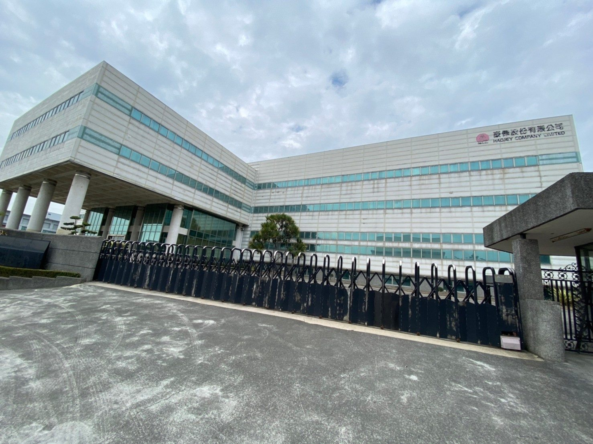
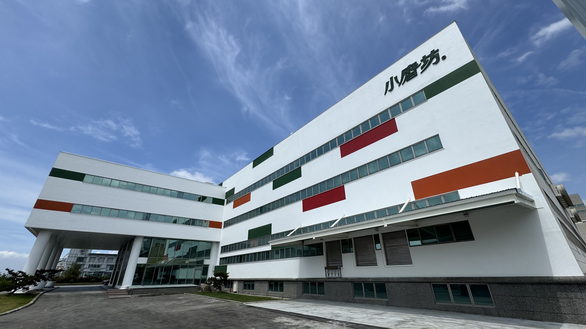

一間企業的形象，不只存在於 Logo、網站與名片
對企業而言，廠辦不只是生產與辦公的空間，也可能是客戶、合作夥伴與求職者接觸企業時所看見的實體環境。
當企業本身持續成長、設備升級並拓展市場，但建築外觀長期沒有更新，企業現在的形象與建築呈現之間，可能逐漸產生落差。
那麼，當既有廠辦外觀開始出現老化時，企業應該如何開始思考改善？

每個案場狀況不同，不宜套用單一做法

每個案場的既有材料、使用狀況與外牆條件不同，因此更新方式也不會完全相同。
外牆更新的第一步，是先了解既有建築現況，再依實際條件思考適合的更新方向。
外牆更新，可以重新思考的不只是外觀
外牆更新，不只是改變建築的顏色。它也可以重新思考立面、材質與整體外觀。

既有外牆材質、使用狀況與現況條件。
色彩、立面與企業對外呈現。
施工條件、使用需求與後續維護。
外牆更新，就是在這些條件之間找到適合的方向。
案例 ｜ 中部食品企業廠辦更新
每個案場的條件不同，實際更新方式也需要依現況規劃。
以中部食品企業廠辦為例，施工前先進行既有外牆現況檢視，再依本案條件規劃外牆更新方案。本案採用 PPG 佩能漆 ＋ 節能板工法，並透過 3D 渲染圖確認更新後的立面效果。



讓既有建築，重新跟上企業現在的樣子
從既有建築條件出發，結合立面規劃、材料與外牆工程，協助企業思考適合的更新方向。